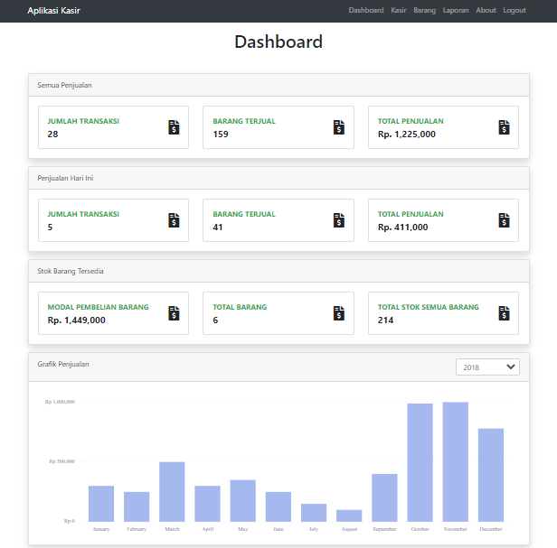

Aplikasi kasir menggunakan PHP, MySQL dan AJAX

Aplikasi kasir dapat digunakan untuk laporan usaha anda
-
1. Login : - menggunakan validasi ajax -
2. Dashboard : - Menampilkan Informasi semua penjualan - Menampilkan Penjualan hari ini - Menampilkan Informasi Barang (modal, stok) -
3. Kasir : - Menggunakan ajax - Pencarian barang - Tambah barang ke keranjang - Hitung transaksi -
4. Barang - CRUD barang, search dan pagination menggunakan ajax -
5. Laporan : - pencarian transaksi berdasarkan waktu - read laporan pembelian - hapus pembelian satu per satu atau berdasarkan waktu - export laporan excel dan PDF
Teknologi:
- PHP
- jQuery
- Ajax
- MySQL
- Chart.js
Link :
Login
Admin Dashboard

Kasir